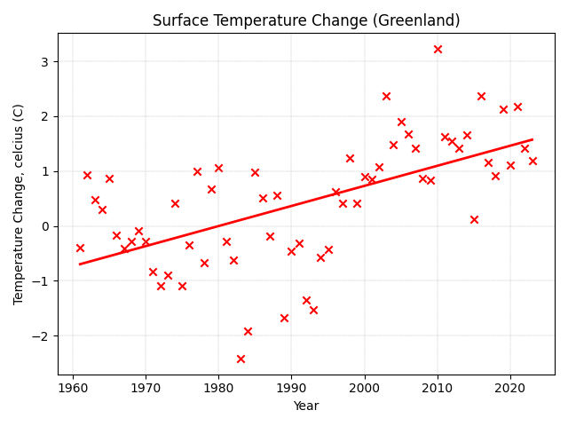

BACK
DATA ANALYSIS
PROJECT 2
SUMMARY
Glaciers and ice sheets play an important role in the ecosystems of our planet, directly effecting changes in sea level whilst reflecting solar radiation away from the earth.
The retreat and permanent loss of large glaciers over the coming century, and the subsequent rise in sea level that follows, could potentially impact human populations living in coastal regions.
This data project was designed to illucidate the relationship between annual changes in glacial mass balance and land surface temperature (both global and regional), offering anyone interested the chance to examine the data for themselves.
Glacier mass balance data was selected based on the availability and completeness of records, from which the observational data of nine regions were extracted for analysis:
Antarctica, Austria, Canada, Chile, Greenland, Iceland, Nepal, Norway and the United States. The data was then supplemented with records of regional temperature fluctuations
in order to find any trends or correlations.
All data visualitions have been included at the end of the report.
CONCLUSIONS
Strong negative correlation found between a global increase in land surface temperature and a global decrease in glacial mass balance, with results that are statistically insignificant (p-value=1.00).
Negative correlation found between regional increases in land surface temperature & regional decreases in glacial mass balance, with results that are statistically significant (p-value=0.03 (Iceland), p-value=0.005 (United States)).

CHALLENGES
During the project a number of obstacles emerged, which were time-consuming and caused the project to run on longer than scheduled.
Sourcing the most recent and extensive data sets:
- the first glacial datasets used were obtained from the Randolf Glacier Inventory (RGI), the World Glacier Inventory (WGI) and the Global Land Ice Monitoring System (GLIMS).
- the data within these sets was outdated and inconsistent in their annual measurements of glacial area and mass balance.
- this forced me to seek out data observations from the World Glacier Monitoring Service (WGMS) which was more up-to-date and comprehensive.
Having to backtrack helped me acknowledge the time and effort data engineers put into seeking suitable datasets, as well as the time they put into understanding which data is usable.
Selecting (and omitting) relevant data:
- annual glacier measurements for each region began in differing years (some as far back as 1946), which made comparisons between each region over specific time periods difficult.
- missing (NaN) records also made accurately calculating the linear regression across larger time scales problematic, given that missing values would have to be estimated or randomised.
- since temperature records from the IMF dataset began in 1960, glacial observations prior to 1960 were omitted from further analysis.
The high number of omissions in the data strengthened my conviction for rigorous data collection across all areas of environmental science, both globally and regionally.
Calculating p-values:
- during calculations, functions were returning abnormal p-values (between 1.00 and 6.00), which were rounded down to 1.00 (meaning 'statistically insignificant').
- it wasn't until the p-values started falling below 1.00 that my statistical analysis of the data felt somewhat accurate.
- fueled by the lack of belief in the statistical methods used, I learned that the p-value is affected by a number of variables including sample size, data collection methods, modelling and one-sided/two-sided tests.
This taught me to remain objective when regarding data and to follow analytical practices by the book, even if the results don't make any sense at first.
TECHNIQUES
Below is an overview of the methods used to acquire, prepare, analyse and visualise the data.
(the outline is very brief due to the urge to undertake the next project)
Data Acquisition:
- .csv files
- scientific publications & journals
Data Preparation:
- remove columns (df.pop)
- query columns (df[df.year > 1960])
- melt and pivot table (df.melt)(df.pivot_table)
- join dataframes (pd.concat)
- mean (df.mean)
- export .csv file (df.to_csv).
Data Analytics:
- linear regression (stats.linregress)
- coefficient of correlation (stats.pearsonr)
- p-value (stats.pearsonr)
- interpolation (df.interpolate)
Data Visualisation:
- twin x-axis (ax.twinx)
- query dataframe (df[df.year > 1960])
- gridlines (ax.grid)
- x-ticks (plt.xticks)
EXTENSIONS
If I were to revise the project, I would extend it to include:
- the direct impact of glacial mass balance on global/regional sea levels.
- an increased sample size to form a more comprehensive data set, including glaciers from all available regions and sources.
- interactive visualisations, so that users can interact with data from all regions that interests them.
SOURCES
WGMS: https://wgms.ch/
IMF: https://climatedata.imf.org/datasets/4063314923d74187be9596f10d034914/explore?showTable=true
Sources used for analysis prior to finding more compatible data:
RGI: https://nsidc.org/data/nsidc-0770/versions/7#anchor-data-access-tools
WGI: https://nsidc.org/data/glacier_inventory/browse.html
GLIMS: http://glims.colorado.edu/glacierdata/
Oerlermans: https://www.researchgate.net/publication/7988494_Extracting_a_Climate_Signal_from_169_Glacier_Records
VISUALISATIONS
Global


Antarctica

Austria

Canada
Chile
Greenland

Iceland

Nepal
Norway
United States
BACK